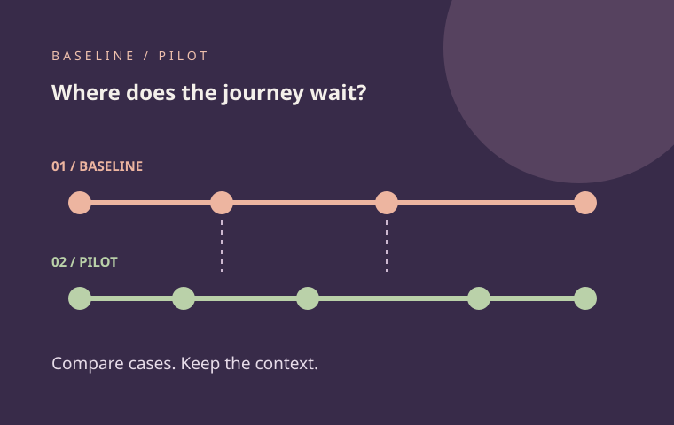

Pilot evaluation and process evidence Working prototype
WorkflowFit
A polished pilot matters less than whether it improves an actual workday.

The problem
Teams can approve a new tool without knowing where time was lost.
A request may wait for missing information, assignment or a response to the customer. If the team only sees the final completion date, it is hard to tell which handoff deserves attention or whether a proposed solution fits the process.
Who it may help
A recognizable operating problem.
Operations leads, schools, service teams, founders and product teams preparing a small, honest test of a workflow change.
Picture the handoff.
A school tracks enquiries from first contact to customer update. The team compares a few earlier cases with a few fictional pilot cases, looking at the time between the same five stages. It also records extra handoffs and the context that could explain a difference.
What we want to learn
What could improve if it fits?
- See the waiting pointsFollow cases through five stages and compare the time between them.
- Keep incomplete work visibleOpen cases remain in the list while completed cases inform duration medians.
- Define a fair pilotRecord a hypothesis, useful outcome, guardrail, decision owner and next decision.
These are outcomes to test with teams, not measured results from customers.
Working scope
What you can try today.
The working browser demo contains fictional baseline and pilot cases. You can inspect their timelines, add safe examples, edit the pilot brief and export a report. Data is stored in your browser. It does not manage live enquiries, send customer updates or establish that the software caused a change.
Try it yourself.
- Compare the fictional baseline and pilot summaries, then open an individual case.
- Add a partial case and see that it stays visible but does not affect the duration median.
- Write a hypothesis and guardrail in the pilot brief and export the report.
Engineering evidence
The implementation behind the demo.
JavaScript validation and metric functions, stage timeline interface, browser localStorage, JSON report and tests for chronology, medians and incomplete cases.
The linked repository includes the code, local setup instructions and automated tests. The GitHub Pages site runs the safe browser demonstration.
Pilot boundary
What the demo does not prove.
The groups are small and fictional. Durations count calendar time, including nights and weekends. Extra handoffs are user-entered. A difference between groups does not prove causation.
A real pilot would require agreed case selection, consent, secure data handling, staff feedback and a measurement period.
Free guided pilot
Test one case with your team.
Take one workflow your team already understands, choose comparable example cases and agree what evidence would make further testing worthwhile. The first guided conversation can use fictional data.
No fee and no obligation to adopt. A production build would be discussed and scoped separately.